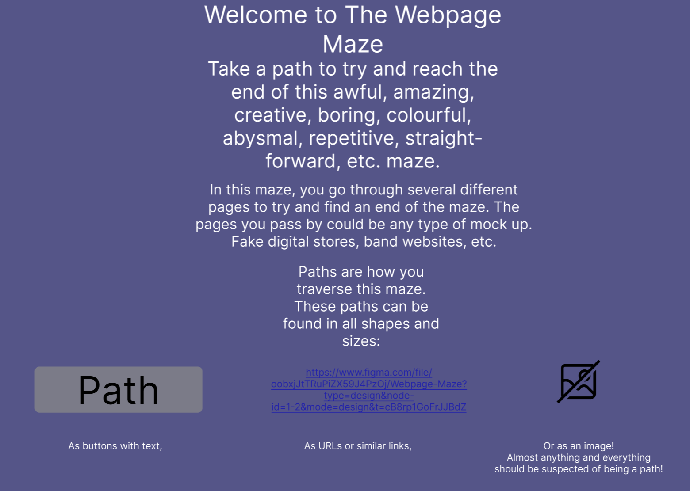
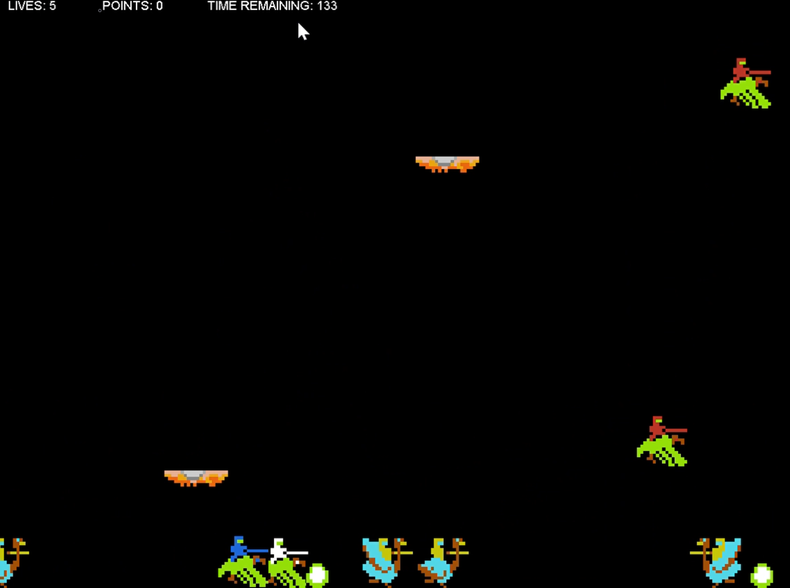
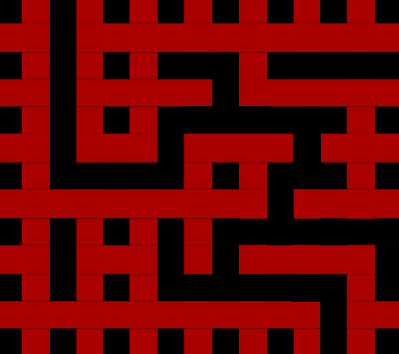

Portfolio
-
Webpage Maze
This project was started in December 2023, and was made with Brayden Noble. It was implemented using a combination of HTML, CSS, and Javascript, as well as a mock using Figma. The site consists of several websites connected together through maze-like and convoluted paths. The goal is to go through the maze, find interesting sites, and eventually find an ending.
JOUST Recreation
Joust is an action game developed by Williams Electronics and released in arcades in 1982. Our recreation was made in October of 2022, and was made by a team consisting of myself, Bryce Tekulve, and Eric Bender. Our recreation was made in Java through Eclipse. It implimented the main ascpects of the game, suchas 2 players, enemies that follow and hurt players, platforms, and enemies turning into eggs upon death.
Labrynth
Labrynth was a personal project that involved the user controlling a yellow circle through a randomly generated maze. Once the circle reached the end, a new maze of harder dificulty would be generated. This was made using QBasic, and the way a maze was generated was using the paint comamnds. First, red bars would be drawn in a criss-cross pattern as shown, creating black squares. Then random sections between the black squares were removed. Finally, the program would have to check whether the maze generated can be copmleted. Since QBasic is basic, methods for checking this was difficult to formulate. How I went about it was utilizing the paint command. This command would fill the black area with blue, starting at the beginning spot, and then I would have the program chack whether this paint had reached the end spot. If the spot was black, a new maze needed to be generated. If not, the player was placed in the beginning spot and was left to control it. Unfortunatly, the drive it was stored on was wiped, so I had to recreate an image of it.